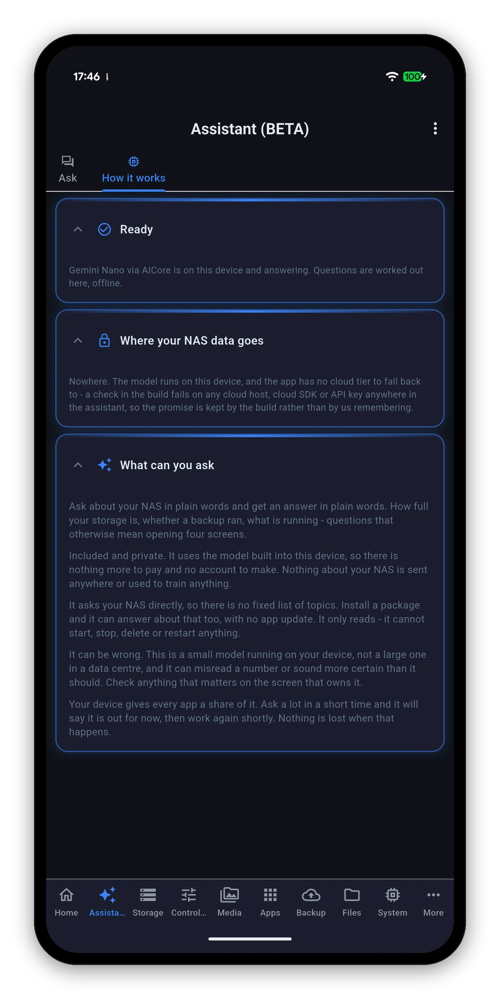

"Is anything about my storage worth worrying about?" is a question that otherwise means opening four screens. The assistant reads what your NAS reported and answers it - with a model running on your phone, offline, that never sends anything anywhere.

The Assistant tab has two sub-views: Ask, and How it works. Ask opens with four suggestions, which are there to show the shape of a good question rather than to limit you.
This is the part that is easy to miss. The assistant is not a set of canned answers about storage and backups - it is pointed at whatever your NAS actually publishes.
The model belongs to the device. Your question, your NAS's data and the answer are all handled on the phone, and it works with the network switched off.

The assistant cannot start, stop, delete or restart anything. Not because it has been asked nicely not to - because it is not given those tools in the first place.
That matters more than it sounds. A model that is instructed not to do something can be talked into doing it. A model that has no way to do it cannot. If you want to restart a container, the Docker screen is three taps away and it will ask you to confirm.
This is a small model running on a phone, not a large one in a data centre. It can misread a number or sound more certain than it should. The app says this on the screen rather than in a footnote.
| Platform | Model | Requirement |
|---|---|---|
| Android | Gemini Nano | A device with AICore and a Gemini Nano model available to it. |
| iOS and macOS | Apple Intelligence | A device where Apple Intelligence is supported and enabled. |
| Anything else | - | The tab is not shown at all. |
The How it works sub-view tells you which state your own device is in, and what it found.
Every preference the app has, and what each one changes.